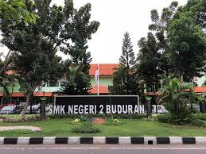

Tentang-aku.com

Sekolahku SMKN 2 Buduran
Sekolahku ini beralamat di Jl. Jenggolo No.2 A, Bedrek, Siwalanpanji kecamatan buduran kabupaten Sidoarjo,jawa timur. Aku memilih program keahlian RPL karena aku senang disitu. Sekolahku itu sangat rindang dan asri suasananya sangat menyenangkan tetapi sayang lapangan olahraganya kecil dan tempat parkir yang belum memadai. Saya sangat senang bersekolah di SMKN 2 Buduran
Sekolahku ini mempunyai 6 program keahlian yaitu :
- RPL
- Multimedia
- OTKP
- Perbankan
- Bisnis Daring
- Akuntansi
Visi Misi SMKN 2 Buduran
Visi : Menjadi sekolah unggul dan mumpuniMisi :
- Melakukan program pendidikan dan peatihan yang berorientasi pada pengembangan IPTEK sehunbungan dengan nillai-nilai kemanusiaan, pelestarian alam, keimanan dan ketaqwaan kepada Tuhan YME, adat istiadat dan budaya bangsa
- Membuat lingkungan kerja yang aman nyaman dan sejahtera untuk selalu meningkatkan personilnya
- Menghasilkan lulusan berkualitas sesuai dengan tuntutan kebutuhan masyarakat dan mampu bersaing di pasar tenaga kerja dan mengembangkan diri